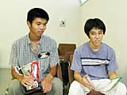

| #8 「マリオテニス64カップ ダブルストーナメント」全国決勝大会 |
| 『マリオテニス64』のダブルス日本一を決める大会が、ついに開催！ 各地の予選を勝ち抜いてきた屈強プレイヤーたちがNINTENDOスペースワールド2000に集い、熱い対戦をくりひろげました。その模様をここでお伝えしちゃいます。優勝者の独占インタビューもありますよ。 ※ルールは2ゲーム先取の1セットマッチ |
||||||||||||||
|
||||||||||||||
|
||||||||||||||
| ●準々決勝 | ||||||||||||||
| ・ 64マリオスタジアム代表(クッパ＆パタパタ)vs.名古屋代表(ドンキーコング＆テレサ) 初戦は今大会一番の大接戦となりました。1ゲーム目も２ゲーム目も、６−６のデュースまでもつれこむという白熱の展開。アドバンテージの取り合いの中、結局2ゲームを先取したのは64マリオスタジアム代表でしたが、どちらが勝ってもおかしくない好ゲームに、会場からは両チームに惜しみない拍手が贈られました。 ・ 札幌代表(べビィマリオ＆パタパタ)vs.仙台代表(テレサ＆パタパタ) ２戦目は、うってかわって一方的な展開。札幌代表のべビィマリオが大暴れ！ ネット際からの急角度スマッシュがバシバシさくれつしました。「べビィマリオは速くて使いやすいんですよね。あのスマッシュは大きな武器ですよ」と解説の高橋兄弟。７−１、７−３と連続で２ゲームを先取した札幌代表が、準決勝にコマを進めました。 |
||||||||||||||
|
||||||||||||||
| ●準決勝 | ||||||||||||||
| ・ 福岡代表(ヨッシー＆ルイージ)vs.64マリオスタジアム代表(クッパ＆パタパタ) シードの福岡代表が、ヨッシー＆ルイージのグリーンコンビで、64マリオスタジアム代表を迎え撃ちます。しかし、64マリオスタジアム代表のクッパのパワープレイと、パタパタの相手の届かないところへの狙いすましたショットに、あえなく粉砕されてしまいました。３−７、０−７と圧倒的な強さを見せつけた64マリオスタジアム代表が、ついに決勝進出！ ・ 札幌代表(べビィマリオ＆パタパタ)vs.大阪代表(べビィマリオ＆ドンキーコングJr.) シードの大阪代表は、なんとお姉さんと弟さんの兄弟チーム。隠れキャラのドンキーコングJr.を使う通ぶりですが、兄弟の息のあったプレイも、札幌代表の、例のべビィマリオのネット際急角度スマッシュには勝てず、惜しくも敗退。「これは札幌代表の得意技になっていますね。見事です」と高橋兄弟も絶賛。７−５、７−２と危なげなく2ゲームを先取した札幌代表は、「決勝もこの作戦でいきます」と力強く語ってくれました。 |
||||||||||||||
| ●3位決定戦 | ||||||||||||||
| ・ 福岡代表(ヨッシー＆ルイージ)vs.大阪代表(べビィマリオ＆ドンキーコングJr.) 決勝の前に、3位決定戦が行われました。ルイージをネット際に置き積極的に戦う福岡代表ですが、４−７、３−７と2ゲームを先取して3位に輝いたのは大阪代表。兄弟のチームワークはやはり強かった？ 試合後、「今日はお姉さんがうまかったです」とお姉さんをたたえる優しい弟さんでした。 |
||||||||||||||
| ●決勝戦 | ||||||||||||||
| ・ 札幌代表(べビィマリオ＆パタパタ)vs.64マリオスタジアム代表(クッパ＆パタパタ) ついに『マリオテニス64』日本一を決める試合が始まりました！。今まで、べビィマリオをネット際に置き、すごい角度のスマッシュを打ちこむという戦法で勝ちぬいてきた札幌代表。これに対し64マリオスタジアム代表は、べビィマリオに仕事をさせないという戦法に出ました。べビィマリオの頭上を越えるロブを多用してきたのです。結果、べビィマリオはほとんど効果的なショットを打てず、１−７、２−７と連続で2ゲームを制した64マリオスタジアム代表が、見事『マリオテニス64』日本一の栄冠を勝ち取りました！ おめでとう！ 優勝は、64マリオスタジアム代表!! |
||||||||||||||
|
||||||||||||||
| ●優勝者独占インタビュー | ||||||||||||||
| --見事優勝の座に輝いた、64マリオスタジアム代表の、小泉くんと鈴木くんにお話を聞いてみましょう。優勝おめでとうございます。 | ||||||||||||||
| 鈴木：なんか実感ないですねえ(笑)。 | ||||||||||||||
| --優勝のポイントは何だったんでしょう？ | ||||||||||||||
| 鈴木：ポイントと言われても、うーん、何だろう(笑)。特に何もないよね？ 小泉：でも、先手先手でいってたじゃん。 |
||||||||||||||
| --優勝までの道のりは、つらかったですか？ それとも楽でした？ | ||||||||||||||
| 鈴木：1回戦の名古屋代表が強かったですね。あれはつらかったです。 小泉：初戦はつらかったですが、あとはわりと波にのれた感じですね。言い訳するようでいやなんですが、自分のコントローラーじゃなかったんで、自分の思うようなプレイができなかったところもあり、悔しかったです。 |
||||||||||||||
| --優勝してもまだまだ向上心たっぷりなお二人。今日はありがとうございました。 |
||||||||||||||
|
|